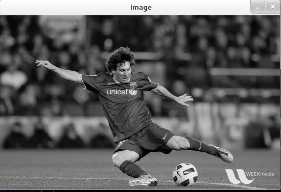
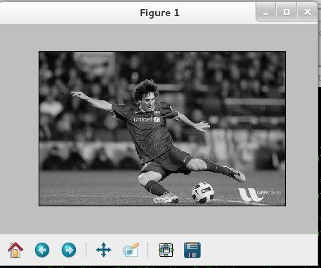

Getting Started with Images¶
Goals¶
- Here, you will learn how to read an image, how to display it and how to save it back
- You will learn these functions : :ocv:func:`imread`, :ocv:func:`imshow` , :ocv:func:`imwrite`
- Optionally, you will learn how to display images with matplotlib
Using OpenCV¶
Read an image¶
Use the function :ocv:func:`imread` to read an image. The image should be in the working directory or a full path of image should be given.
Second argument is a flag which specifies the way image should be read.
- cv2.CV_LOAD_IMAGE_COLOR : Loads a color image. Any transparency of image will be neglected. It is the default flag.
- cv2.CV_LOAD_IMAGE_GRAYSCALE : Loads image in grayscale mode
- cv2.CV_LOAD_IMAGE_UNCHANGED : Loads image as such including alpha channel
Note
Instead of these three flags, you can simply pass integers 1, 0 or -1 respectively.
import numpy as np
import cv2
# Load an color image in grayscale
img = cv2.imread('messi5.jpg',0)
Warning
Even if the image path is wrong, it won’t throw any error, but print img will give you None
Display an image¶
Use the function :ocv:func:`imshow` to display an image in a window. The window automatically fits to the image size.
First argument is a window name which is a string. second argument is our image. You can create as many as you wish, but with different window names.
cv2.imshow('image',img)
cv2.waitKey(0)
cv2.destroyAllWindows()
A screenshot of the window will look like this (in Fedora-Gnome machine):

:ocv:func:`waitKey` is keyboard binding function. Its argument is the time in milliseconds. The function waits for specified milliseconds for any keyboard event. If you press any key in that time, the program continues. If 0 is passed, it waits indefinitely for a key stroke. It can also be set to detect specific key strokes like, if key a is pressed etc which we will discuss below.
:ocv:func:`destroyAllWindows` simply destroys all the windows we created. If you want to destroy any specific windows, use the function :ocv:func:`destroyWindow` where you pass the exact window name as the argument.
Note
There is a special case where you can already create a window and load image to it later. In that case, you can specify whether window is resizable or not. It is done with the function :ocv:func:`namedWindow`. By default, the flag is cv2.WINDOW_AUTOSIZE. But if you specify flag to be cv2.WINDOW_NORMAL, you can resize window. It will be helpful when image is too large in dimension and adding trackbar to windows.
cv2.namedWindow('image', cv2.WINDOW_NORMAL)
cv2.imshow('image',img)
cv2.waitKey(0)
cv2.destroyAllWindows()
Write an image¶
Use the function :ocv:func:`imwrite` to save an image.
First argument is the file name, second argument is the image you want to save.
cv2.imwrite('messigray.png',img)
This will save the image in PNG format in the working directory.
Sum it up¶
Below program loads an image in grayscale, displays it, save the image if you press ‘s’ and exit, or simply exit without saving if you press ESC key.
import numpy as np
import cv2
img = cv2.imread('messi5.jpg',0)
cv2.imshow('image',img)
k = cv2.waitKey(0)
if k == 27: # wait for ESC key to exit
cv2.destroyAllWindows()
elif k == ord('s'): # wait for 's' key to save and exit
cv2.imwrite('messigray.png',img)
cv2.destroyAllWindows()
Warning
If you are using a 64-bit machine, you will have to modify k = cv2.waitKey(0) line as follows : k = cv2.waitKey(0) & 0xFF
Using Matplotlib¶
Matplotlib is a plotting library for Python which gives you wide variety of plotting methods. You will see them in coming articles. Here, you will learn how to display image with Matplotlib. You can zoom images, save it etc using matplotlib.
import numpy as np
import cv2
from matplotlib import pyplot as plt
img = cv2.imread('messi5.jpg',0)
plt.imshow(img, cmap = 'gray', interpolation = 'bicubic')
plt.xticks([]), plt.yticks([]) # to hide tick values on X and Y axis
plt.show()
A screenshot of the window will look like this :

See also
Plenty of plotting options are available in matplotlib. Please refer to maplotlib docs for more details. Some, we will see on the way.
Warning
color image loaded by OpenCV is in BGR mode. But matplotlib displays in RGB mode. So color images will not be displayed correctly in matplotlib if image is read with OpenCV. Please see the exercises for more details.
Additional Resources¶
- Matplotlib Plotting Styles and Features
Exercises¶
- There is some problem when you try to load color image in OpenCV and display it in Matplotlib. Read this discussion and understand it.